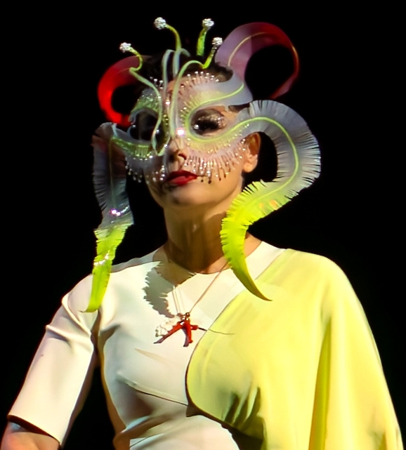
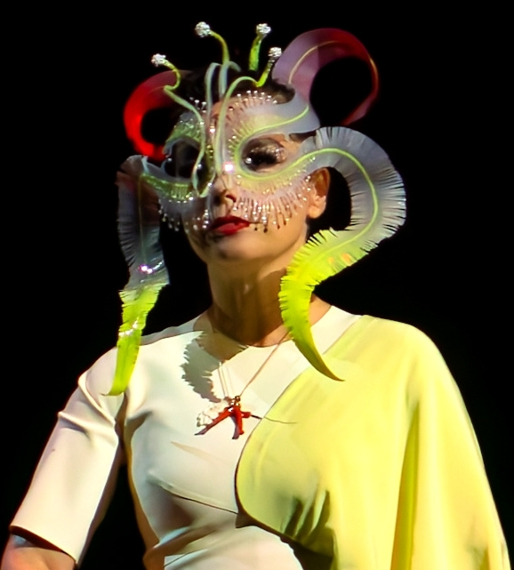

Björk, une voix envoûtante
Sa voix est décrite comme élastique, forte, organique, authentique et capable de faire des sauts périlleux de qualité, et est louée pour sa capacité à scatter et sa manière particulière de chanter qui comprend des passages gutturaux, de crier et de se laisser guider par ses émotions. Alex Ross du magazine New Yorker explique ne pas avoir trouvé « de voix semblable dans la musique classique ou dans la musique pop. Elle est immédiatement reconnaissable. Vous entendez une ou deux notes et vous savez que c'est Björk »
 
